Corsi di cucito, maglia, uncinetto e ricamo a Torino
Corsi e workshop di cucito, maglia, uncinetto, ricamo, tufting, rammendo e sashiko a Torino e dintorni.
Cerca tutti i workshop63 attività in programma · aggiornato il 30 ottobre 2026
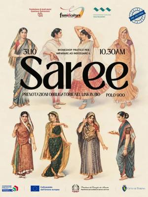
sab31ottTessileWorkshop di saree: come indossarlosabato 31 ottobre, 10:30Centro (TO) · Gratiscon Fiumi di Culture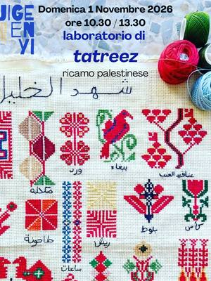
dom1novTessileTatreez: ricamo tradizionale palestinesedomenica 1 novembre, 10:30Aurora (TO) · 20 €con Lana Salameh per Jigeenyi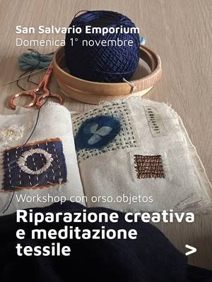
dom1novTessileWorkshop di rammendo: riparazione creativadomenica 1 novembre, 15:00–17:00San Salvario (TO) · 30 €con orso.objetos per Emporium APS- dal4novTessileSartoria di base: corso di cucitoda mercoledì 4 novembreAurora (TO)con Modou per Jigeenyi
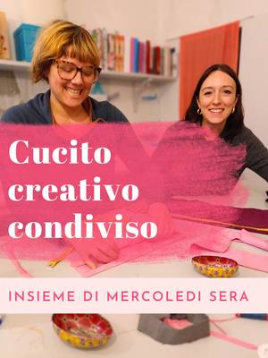
dal7ottTessileCucito creativo condiviso: serate in sartoriada mercoledì 7 ottobre a mercoledì 25 novembre, ogni mercoledì, 19:00–21:00Torino · 14 € a seratacon Favole di Seta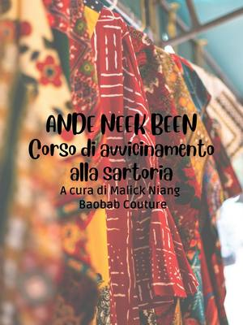
dal14ottTessileAnde Neek Been: corso di sartoriada mercoledì 14 ottobre a mercoledì 16 dicembre, ogni mercoledì, 19:15–21:00Barriera di Milano (TO) · 80 €con Malick Niang (Baobab Couture) per Bagni Pubblici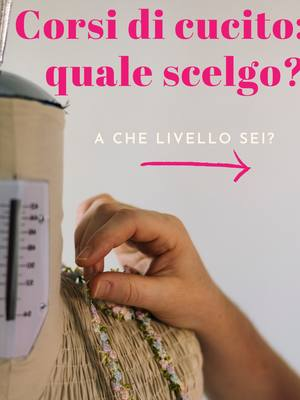
sab7novTessileLezione di cucito a mano: orli e bottonisabato 7 novembreTorino · 48 €con Favole di Seta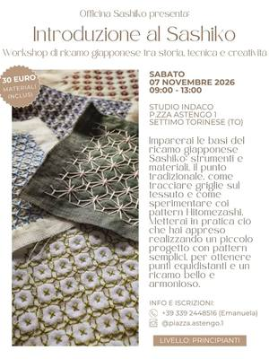
sab7novTessileIntroduzione al Sashiko: ricamo giapponesesabato 7 novembre, 09:00–13:00Settimo Torinese (TO) · 30 €con Officina Sashiko di Studio Indaco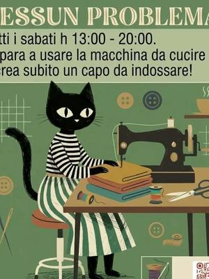
sab7novTessileWorkshop di cucito: pantalone palazzosabato 7 novembre, 13:00–20:00San Salvario (TO)con OPEN 10125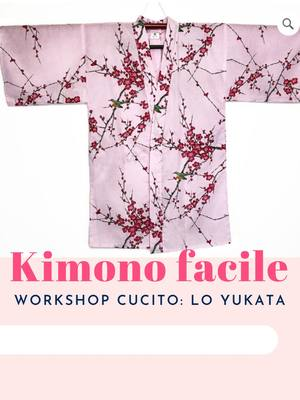
sab7novTessileKimono facile: cucire uno yukatada sabato 7 novembre a domenica 8 novembre, 14:00–18:30Torino · 85 €con Favole di Seta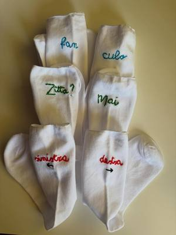
sab7novTessileWorkshop di ricamo: decora i tuoi slipsabato 7 novembre, 15:00–18:00Borgo Po (TO)con UnciPazzo per TObed- sab7novTessileSocial Knitting: maglia in compagniasabato 7 novembre, 15:00–19:00San Salvario (TO)con Torino Social Knitting
- sab7novTessileLaboratorio di shibori: tintura giapponesesabato 7 novembre, 16:30Centro (TO) · Gratiscon Lucia Lapone per Fiumi di Culture
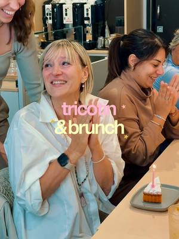
dom8novTessileTricotin & Brunch: tovaglietta a magliadomenica 8 novembreCentro (TO) · 49 €con Aperi Pods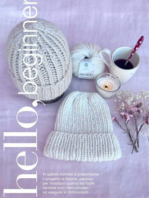
dom8novTessileKnit + colazione: berretto ai ferridomenica 8 novembre, 10:00–12:00Savigliano (CN) · 39 €con Merceria Taglia e Cuci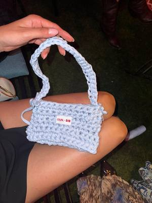
dom8novTessileBorse all’uncinetto: basi e aperitivodomenica 8 novembre, 18:00Quadrilatero (TO) · 39 €con BAO NOW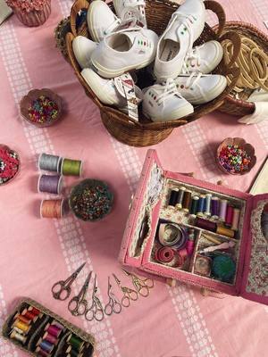
lun9novTessileRicamo a colazione: ricamare in compagnialunedì 9 novembre, 10:30–12:00Borgo Po (TO)con CaroLab per TObed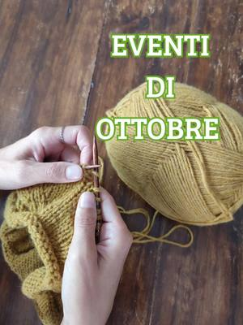
gio12novTessileAperisferruzzo: maglia in compagniagiovedì 12 novembreSan Salvario (TO) · Gratiscon Raggomitolando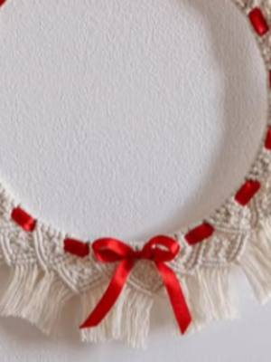
sab14novTessileWorkshop di macramè: ghirlanda da appenderesabato 14 novembre, 14:30–18:30Villar Perosa (TO) · 40 €con Riflessi di Casa- sab14novTessileSocial Knitting: speciale compleannosabato 14 novembre, 15:00–19:00Torinocon Torino Social Knitting
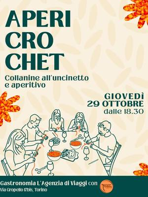
lun16novTessileApericrochet: collanine all’uncinettolunedì 16 novembre, 18:30Cit Turin (TO) · esauritocon Hobby della Nonna per Gastronomia L’Agenzia di Viaggi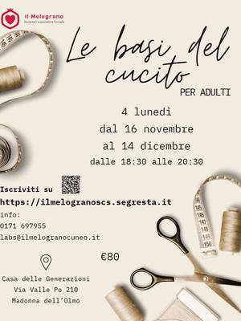
dal16novTessileLe basi del cucito: corso per adultida lunedì 16 novembre a lunedì 14 dicembre, ogni lunedì, 18:30–20:30Cuneo (CN) · 80 € per 4 incontricon Cooperativa Il Melograno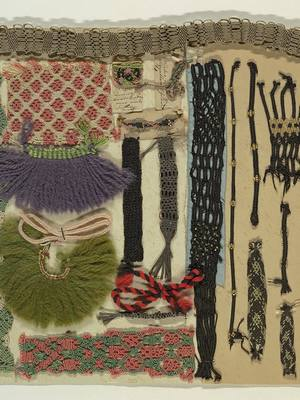
mar17novTessileWorkshop di macramè: regali di Natalemartedì 17 novembre, 18:30–20:30Vanchiglia (TO)con Nodo Tufting Torino- mer18novTessileScuola di uncinetto: per principiantimercoledì 18 novembre, 10:30–12:30San Salvario (TO) · 20 €con Raggomitolando
- mer18novTessileScuola di uncinetto: per principiantimercoledì 18 novembre, 17:00–19:00San Salvario (TO) · 20 €con Raggomitolando
- sab21novTessileWorkshop di punch needle: ricamo a pelosabato 21 novembreVanchiglia (TO)con Elisa Delledonne per Spazio Costanza
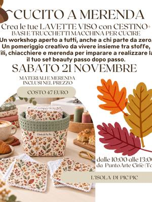
sab21novTessileCucito a Merenda: lavette viso e cestinosabato 21 novembre, 10:00–13:00Ciriè (TO) · 47 €con L’Isola di Pic Pic- sab21novTessileWorkshop di cucito: kimonosabato 21 novembre, 13:00–20:00San Salvario (TO)con OPEN 10125
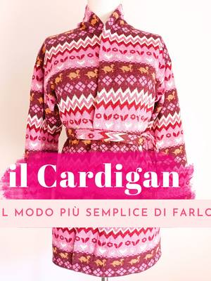
sab21novTessileWorkshop cardigan: cucire maglia e maglinada sabato 21 novembre a domenica 22 novembre, 14:00–18:30Torino · 85 €con Favole di Seta- sab21novTessileSocial Knitting: maglia in compagniasabato 21 novembre, 15:00–19:00San Salvario (TO)con Torino Social Knitting
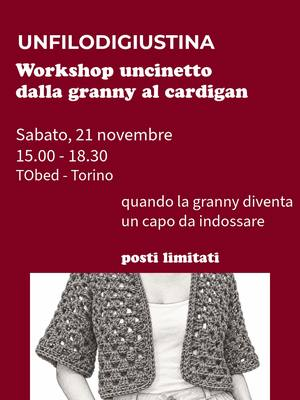
sab21novTessileDalla granny al cardigan: uncinettosabato 21 novembre, 15:00–18:30Borgo Po (TO) · 50 € · esauritocon Un filo di Giustina per TObed dom22novTessileTricotin & Brunch: tovaglietta a magliadomenica 22 novembreCentro (TO) · 49 €con Aperi Pods
dom22novTessileTricotin & Brunch: tovaglietta a magliadomenica 22 novembreCentro (TO) · 49 €con Aperi Pods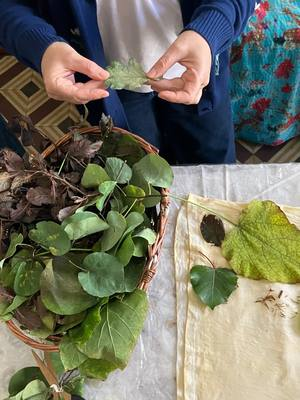
dom22novTessileShibori e indaco: tintura naturale bludomenica 22 novembre, 10:00–13:00San Donato (TO) · 55 €con Patrizia Berto (Startlap) per Orso Objetos- mar24novTessileScuola di maglia: per principiantimartedì 24 novembre, 10:30–12:30San Salvario (TO) · 20 €con Raggomitolando
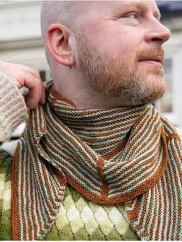
mer25novTessileKAL Clockwork: scialle di Stephen Westmercoledì 25 novembre, 18:00–20:00San Salvario (TO) · Gratiscon Raggomitolando- gio26novTessileScuola di maglia: per principiantigiovedì 26 novembre, 17:00–19:00San Salvario (TO) · 20 €con Raggomitolando
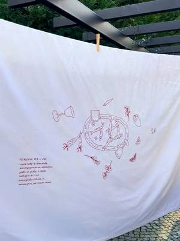
gio26novTessileStitch Happens: serata di ricamogiovedì 26 novembre, 19:00–21:30Aurora (TO) · 35 €con Ricamini Brutti per Velvet Truffle Riot- sab28novTessileFull Immersion: uncinetto da zerosabato 28 novembre, 14:30–18:30Lingotto (TO) · 56 €con Un filo di Giustina
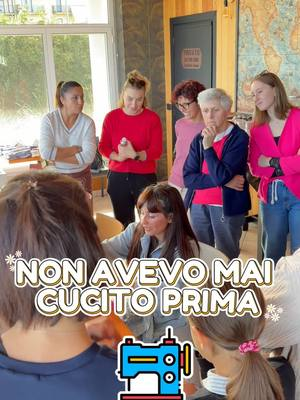
sab12dicTessileCucito a Merenda: progetto di Natalesabato 12 dicembre, 14:30–17:30Pianfei (CN)con L’Isola di Pic Pic per Alter Ego- sab16genTessilePorte aperte: prova la macchina da cuciresabato 16 gennaioSan Salvario (TO)con OPEN 10125
- sab30genTessileWorkshop di cucito: pantalone con taschesabato 30 gennaio, 13:00–20:00San Salvario (TO)con OPEN 10125
- sab20febTessileWorkshop di cucito: giacca Sekaisabato 20 febbraio, 13:00–20:00San Salvario (TO)con OPEN 10125
- sab20marTessileWorkshop di cucito: abitosabato 20 marzo, 13:00–20:00San Salvario (TO)con OPEN 10125
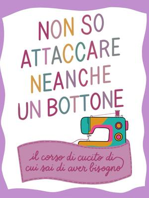
dataa sceltaTessileCorso di cucito: dalle basi ai tuoi capiData a sceltaSan Salvario (TO) · da 50 € a modulocon Albergo di Virtù Sartoria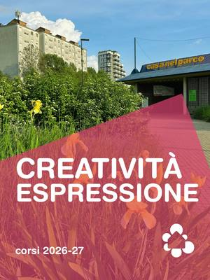
datada confermareTessileCraft Room: maglia e uncinettoData da confermareMirafiori (TO)con Mihaela Mates per Casa nel Parco- datada confermareAltroCascina Roccafranca: corsi della stagioneData da confermareMirafiori (TO)con Cascina Roccafranca
- datada confermareTessileCorso base di cucito: da zero all’orloData da confermareTorino · 48 €con Favole di Seta
- dataa sceltaTessileCorso di cucito creativo e modaData a sceltaTorino · 139 € per 6 lezionicon Kreative Club
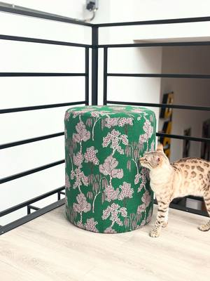
dataa sceltaAltroTappezzeria e restyling: pouf e mobiliData a sceltaBarriera di Milano (TO) · da 20 €con Magazzini Tessili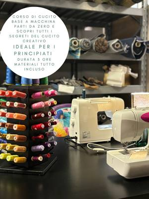
dataa sceltaTessileLaboratori di cucito: pochette e kimonoData a sceltaBarriera di Milano (TO) · da 50 €con Magazzini Tessili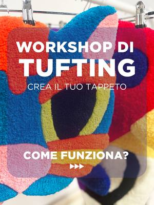
dataa sceltaTessileWorkshop di tufting: crea il tuo tappetoData a sceltaVanchiglia (TO) · da 80 €con Nodo Tufting Torino- dataa sceltaTessileLezioni individuali di maglia e uncinettoData a sceltaSan Salvario (TO) · 24 € a lezionecon Raggomitolando
- dataa sceltaTessileLezioni di cucito: modellazione e sartoriaData a sceltaSan Salvario (TO)con Sassi
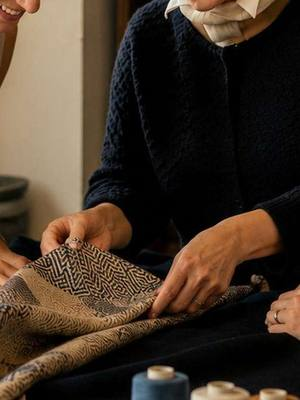
dataa sceltaTessileTessuti italiani: collana di stoffaData a sceltaBorgo Po (TO) · 104 €con Club Joy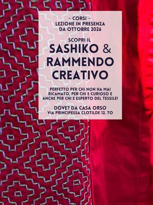
ognivenTessileCorso di sashiko: ricamo giapponeseOgni venerdì, 10:00–12:00San Donato (TO) · 30 € a incontrocon Orso Objetos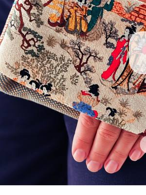
ognimarTessileLaboratorio di cucito creativo: un progetto a voltaOgni martedì, 10:00–12:00San Mauro Torinese (TO)con Marisa Etzi per upTOyou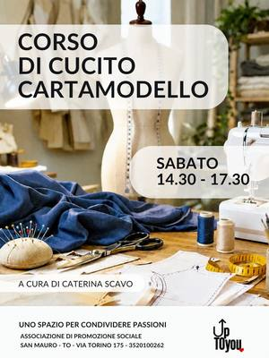
ognisabTessileCorso di cucito: cartamodello e sartoriaOgni sabato, 14:30–17:30San Mauro Torinese (TO)con Caterina Scavo per upTOyou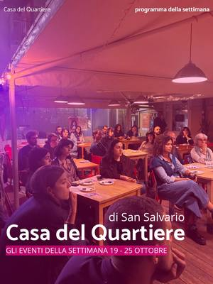
ognimerTessileSferruzzo: maglia e chiacchiereOgni mercoledì, 15:00San Salvario (TO)con Casa del Quartiere di San Salvario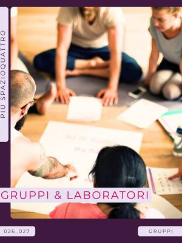
dataa sceltaTessileLaboratorio di ricamo: rammendo e sashikoOgni 15 giorni, 15:30–17:30San Donato (TO)con orso.objetos per Più SpazioQuattro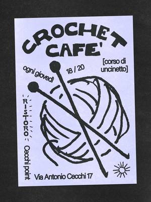
ognigioTessileCrochet Cafè: uncinetto per tuttiOgni giovedì, 18:00–20:00Aurora (TO) · Gratiscon Ristoro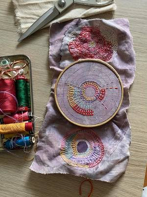
ognilunTessileCorso di rammendo creativo: visible mendingOgni lunedì, 18:30–20:30San Donato (TO) · 30 € a incontrocon Orso Objetos ognimarTessileCorso di sashiko: ricamo giapponeseOgni martedì, 18:30–20:30San Donato (TO) · 30 € a incontrocon Orso Objetos
ognimarTessileCorso di sashiko: ricamo giapponeseOgni martedì, 18:30–20:30San Donato (TO) · 30 € a incontrocon Orso Objetos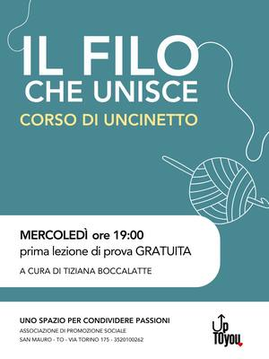
ognimerTessileIl filo che unisce: corso di uncinettoOgni mercoledì, 19:00–21:00San Mauro Torinese (TO)con Tiziana Boccalatte per upTOyou